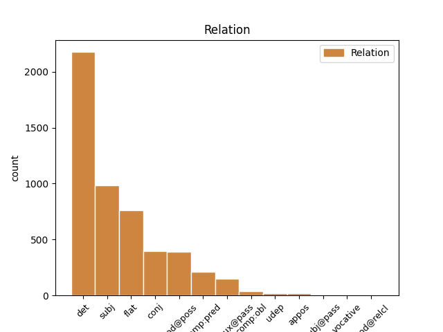
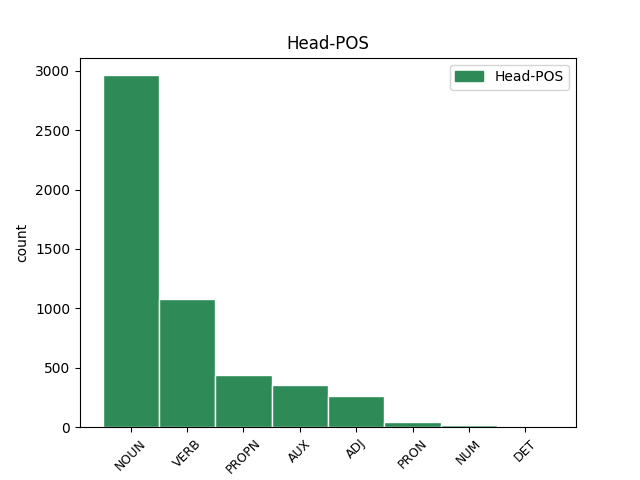
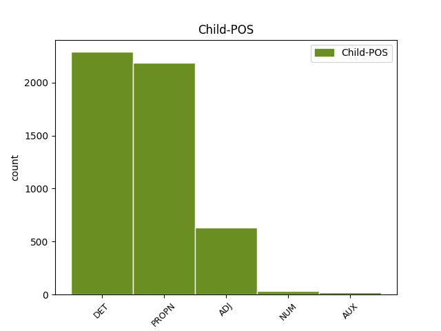

Distribution of features within this leaf



Agreement Rules sorted by frequency.
- When the dependent token is the determiner(det) of the head token, and the dependent token is DET.
1 Żywię _ _ _ _ 0 _ _ _
2 nadzieję _ _ _ _ 0 _ _ _
3 na _ _ _ _ 0 _ _ _
4 Waszą wasz DET adj:sg:acc:f:pos Case=Acc|Gender=Fem|Number=Sing|Number[psor]=Plur|Person=2|Poss=Yes|PronType=Prs 5 det _ _
5 pomoc pomoc NOUN subst:sg:acc:f Case=Acc|Gender=Fem|Number=Sing 0 _ _ _
6 . _ _ _ _ 0 _ _ _
1 Ţe Ţe PROPN subst:sg:nom:f Case=Nom|Gender=Fem|Number=Sing 2 subj _ _
2 przyszła przyjść VERB praet:sg:f:perf Aspect=Perf|Gender=Fem|Mood=Ind|Number=Sing|Tense=Past|VerbForm=Fin|Voice=Act 0 _ _ _
3 . _ _ _ _ 0 _ _ _
4 . _ _ _ _ 0 _ _ _
5 . _ _ _ _ 0 _ _ _
1 Że _ _ _ _ 0 _ _ _
2 była _ _ _ _ 0 _ _ _
3 u _ _ _ _ 0 _ _ _
4 niego _ _ _ _ 0 _ _ _
5 niejaka _ _ _ _ 0 _ _ _
6 pani pani NOUN subst:sg:nom:f Case=Nom|Gender=Fem|Number=Sing 0 _ _ _
7 Ewa Ewa PROPN subst:sg:nom:f Case=Nom|Gender=Fem|Number=Sing 6 flat _ SpaceAfter=No
8 . _ _ _ _ 0 _ _ _
1 Śpiącego spać ADJ pact:sg:acc:m1:imperf:aff Aspect=Imp|Case=Acc|Gender=Masc|Number=Sing|Polarity=Pos|SubGender=Masc1|VerbForm=Part|Voice=Act 0 _ _ _
2 , _ _ _ _ 0 _ _ _
3 zielem _ _ _ _ 0 _ _ _
4 odurzonego odurzyć ADJ ppas:sg:acc:m1:perf:aff Aspect=Perf|Case=Acc|Gender=Masc|Number=Sing|Polarity=Pos|SubGender=Masc1|VerbForm=Part|Voice=Pass 1 conj _ _
5 zabiła _ _ _ _ 0 _ _ _
6 m _ _ _ _ 0 _ _ _
7 sztyletem _ _ _ _ 0 _ _ _
8 . _ _ _ _ 0 _ _ _
1 Zmierzch _ _ _ _ 0 _ _ _
2 stał stać VERB praet:sg:m3:perf Aspect=Perf|Gender=Masc|Mood=Ind|Number=Sing|SubGender=Masc3|Tense=Past|VerbForm=Fin|Voice=Act 0 _ _ _
3 się _ _ _ _ 0 _ _ _
4 coraz _ _ _ _ 0 _ _ _
5 ciemniejszy ciemny ADJ adj:sg:nom:m3:com Case=Nom|Degree=Cmp|Gender=Masc|Number=Sing|SubGender=Masc3 2 comp:pred _ SpaceAfter=No
6 , _ _ _ _ 0 _ _ _
7 na _ _ _ _ 0 _ _ _
8 niebie _ _ _ _ 0 _ _ _
9 ukazały _ _ _ _ 0 _ _ _
10 się _ _ _ _ 0 _ _ _
11 pierwsze _ _ _ _ 0 _ _ _
12 gwiazdy _ _ _ _ 0 _ _ _
13 . _ _ _ _ 0 _ _ _
1 Świniak _ _ _ _ 0 _ _ _
2 ten _ _ _ _ 0 _ _ _
3 jest _ _ _ _ 0 _ _ _
4 kumplem kumpel NOUN subst:sg:inst:m1 Case=Ins|Gender=Masc|Number=Sing|SubGender=Masc1 0 _ _ _
5 Ałganowa Ałganow PROPN subst:sg:gen:m1 Case=Gen|Gender=Masc|Number=Sing|SubGender=Masc1 4 mod@poss _ SpaceAfter=No
6 . _ _ _ _ 0 _ _ _
1 Świadczenia _ _ _ _ 0 _ _ _
2 były być AUX praet:pl:n:imperf Aspect=Imp|Gender=Neut|Mood=Ind|Number=Plur|Tense=Past|VerbForm=Fin|Voice=Act 0 _ _ _
3 by _ _ _ _ 0 _ _ _
4 mniej _ _ _ _ 0 _ _ _
5 spłaszczone spłaszczyć ADJ ppas:pl:nom:n:perf:aff Aspect=Perf|Case=Nom|Gender=Neut|Number=Plur|Polarity=Pos|VerbForm=Part|Voice=Pass 2 comp:aux@pass _ SpaceAfter=No
6 . _ _ _ _ 0 _ _ _
1 Zwyciężyła _ _ _ _ 0 _ _ _
2 po _ _ _ _ 0 _ _ _
3 raz _ _ _ _ 0 _ _ _
4 pierwszy _ _ _ _ 0 _ _ _
5 kobieta kobieta NOUN subst:sg:nom:f Case=Nom|Gender=Fem|Number=Sing 0 _ _ _
6 , _ _ _ _ 0 _ _ _
7 22-letnia _ _ _ _ 0 _ _ _
8 Portugalka Portugalka PROPN subst:sg:nom:f Case=Nom|Gender=Fem|Number=Sing 5 conj _ SpaceAfter=No
9 . _ _ _ _ 0 _ _ _
1 ŻYCIE _ _ _ _ 0 _ _ _
2 przedstawiło _ _ _ _ 0 _ _ _
3 w _ _ _ _ 0 _ _ _
4 sądzie _ _ _ _ 0 _ _ _
5 świadków _ _ _ _ 0 _ _ _
6 , _ _ _ _ 0 _ _ _
7 którzy który DET adj:pl:nom:m1:pos Case=Nom|Gender=Masc|Number=Plur|PronType=Rel|SubGender=Masc1 8 subj _ _
8 widzieli widzieć VERB praet:pl:m1:imperf Aspect=Imp|Gender=Masc|Mood=Ind|Number=Plur|SubGender=Masc1|Tense=Past|VerbForm=Fin|Voice=Act 0 _ _ _
9 Kwaśniewskiego _ _ _ _ 0 _ _ _
10 w _ _ _ _ 0 _ _ _
11 Cetniewie _ _ _ _ 0 _ _ _
12 . _ _ _ _ 0 _ _ _
1 Zrobił zrobić VERB praet:sg:m3:perf Aspect=Perf|Gender=Masc|Mood=Ind|Number=Sing|SubGender=Masc3|Tense=Past|VerbForm=Fin|Voice=Act 0 _ _ _
2 się _ _ _ _ 0 _ _ _
3 jakby _ _ _ _ 0 _ _ _
4 lekko _ _ _ _ 0 _ _ _
5 zadarty zadarty ADJ adj:sg:nom:m3:pos Case=Nom|Degree=Pos|Gender=Masc|Number=Sing|SubGender=Masc3 1 subj _ SpaceAfter=No
6 . _ _ _ _ 0 _ _ _
7 . _ _ _ _ 0 _ _ _
8 . _ _ _ _ 0 _ _ _
1 Żelazny _ _ _ _ 0 _ _ _
2 kolos _ _ _ _ 0 _ _ _
3 Żugajowi Żugaj PROPN subst:sg:dat:m1 Case=Dat|Gender=Masc|Number=Sing|SubGender=Masc1 5 comp:obl _ _
4 nie _ _ _ _ 0 _ _ _
5 nabił nabić VERB praet:sg:m2:perf Aspect=Perf|Gender=Masc|Mood=Ind|Number=Sing|SubGender=Masc2|Tense=Past|VerbForm=Fin|Voice=Act 0 _ _ _
6 nawet _ _ _ _ 0 _ _ _
7 guza _ _ _ _ 0 _ _ _
8 . _ _ _ _ 0 _ _ _
1 Zamiast _ _ _ _ 0 _ _ _
2 trzystu _ _ _ _ 0 _ _ _
3 dwudziestu _ _ _ _ 0 _ _ _
4 ośmiu _ _ _ _ 0 _ _ _
5 obiektów _ _ _ _ 0 _ _ _
6 elektryfikacyjnych _ _ _ _ 0 _ _ _
7 , _ _ _ _ 0 _ _ _
8 załoga _ _ _ _ 0 _ _ _
9 wybudowała _ _ _ _ 0 _ _ _
10 trzysta trzysta NUM num:pl:acc:m3:rec Case=Acc|Gender=Masc|Number=Plur|NumType=Card|SubGender=Masc3 0 _ _ _
11 sześćdziesiąt _ _ _ _ 0 _ _ _
12 cztery cztery NUM num:pl:acc:m3:congr Case=Acc|Gender=Masc|Number=Plur|NumType=Card|SubGender=Masc3 10 appos _ DepType=Congr|SpaceAfter=No
13 . _ _ _ _ 0 _ _ _
1 Wanna _ _ _ _ 0 _ _ _
2 nie _ _ _ _ 0 _ _ _
3 nasunęła nasunąć VERB praet:sg:f:perf Aspect=Perf|Gender=Fem|Mood=Ind|Number=Sing|Tense=Past|VerbForm=Fin|Voice=Act 0 _ _ _
4 mi _ _ _ _ 0 _ _ _
5 żadnych _ _ _ _ 0 _ _ _
6 skojarzeń _ _ _ _ 0 _ _ _
7 , _ _ _ _ 0 _ _ _
8 była być AUX praet:sg:f:imperf Aspect=Imp|Gender=Fem|Mood=Ind|Number=Sing|Tense=Past|VerbForm=Fin|Voice=Act 3 conj _ _
9 normalną _ _ _ _ 0 _ _ _
10 wanną _ _ _ _ 0 _ _ _
11 . _ _ _ _ 0 _ _ _
1 Taka taki DET adj:sg:nom:f:pos Case=Nom|Gender=Fem|Number=Sing|PronType=Dem 2 comp:pred _ _
2 była być AUX praet:sg:f:imperf Aspect=Imp|Gender=Fem|Mood=Ind|Number=Sing|Tense=Past|VerbForm=Fin|Voice=Act 0 _ _ _
3 prawda _ _ _ _ 0 _ _ _
4 . _ _ _ _ 0 _ _ _
1 Przywileje przywilej NOUN subst:pl:nom:m3 Case=Nom|Gender=Masc|Number=Plur|SubGender=Masc3 0 _ _ _
2 jednych jeden ADJ adj:pl:gen:m1:pos Case=Gen|Degree=Pos|Gender=Masc|Number=Plur|SubGender=Masc1 1 mod@poss _ _
3 utrzymują _ _ _ _ 0 _ _ _
4 się _ _ _ _ 0 _ _ _
5 dzięki _ _ _ _ 0 _ _ _
6 mizerii _ _ _ _ 0 _ _ _
7 innych _ _ _ _ 0 _ _ _
8 . _ _ _ _ 0 _ _ _
1 - _ _ _ _ 0 _ _ _
2 Zamilkły zamilknąć VERB praet:pl:f:perf Aspect=Perf|Gender=Fem|Mood=Ind|Number=Plur|Tense=Past|VerbForm=Fin|Voice=Act 0 _ _ _
3 obie oba NUM num:pl:nom:f:congr Case=Nom|Gender=Fem|Number=Plur|NumType=Card 2 subj _ DepType=Congr
4 na _ _ _ _ 0 _ _ _
5 chwilę _ _ _ _ 0 _ _ _
6 . _ _ _ _ 0 _ _ _
1 Wystarczyło _ _ _ _ 0 _ _ _
2 zrobić _ _ _ _ 0 _ _ _
3 jeszcze _ _ _ _ 0 _ _ _
4 krok krok NOUN subst:sg:acc:m3 Case=Acc|Gender=Masc|Number=Sing|SubGender=Masc3 0 _ _ _
5 , _ _ _ _ 0 _ _ _
6 może _ _ _ _ 0 _ _ _
7 dwa dwa NUM num:pl:acc:m3:congr Case=Acc|Gender=Masc|Number=Plur|NumType=Card|SubGender=Masc3 4 conj _ DepType=Congr|SpaceAfter=No
8 . _ _ _ _ 0 _ _ _
1 Wróbel Wróbel PROPN subst:sg:nom:m1 Case=Nom|Gender=Masc|Number=Sing|SubGender=Masc1 2 subj@pass _ _
2 był być AUX praet:sg:m1:imperf Aspect=Imp|Gender=Masc|Mood=Ind|Number=Sing|SubGender=Masc1|Tense=Past|VerbForm=Fin|Voice=Act 0 _ _ _
3 zaskoczony _ _ _ _ 0 _ _ _
4 wiedzą _ _ _ _ 0 _ _ _
5 posła _ _ _ _ 0 _ _ _
6 Grzesika _ _ _ _ 0 _ _ _
7 . _ _ _ _ 0 _ _ _
1 Ta _ _ _ _ 0 _ _ _
2 zbrodnia _ _ _ _ 0 _ _ _
3 wstrząsnęła wstrząsnąć VERB praet:sg:f:perf Aspect=Perf|Gender=Fem|Mood=Ind|Number=Sing|Tense=Past|VerbForm=Fin|Voice=Act 0 _ _ _
4 Polską Polska PROPN subst:sg:inst:f Case=Ins|Gender=Fem|Number=Sing 3 udep _ SpaceAfter=No
5 . _ _ _ _ 0 _ _ _
1 Został zostać VERB praet:sg:m1:perf Aspect=Perf|Gender=Masc|Mood=Ind|Number=Sing|SubGender=Masc1|Tense=Past|VerbForm=Fin|Voice=Act 0 _ _ _
2 em _ _ _ _ 0 _ _ _
3 Żydem Żyd PROPN subst:sg:inst:m1 Case=Ins|Gender=Masc|Number=Sing|SubGender=Masc1 1 comp:pred _ SpaceAfter=No
4 . _ _ _ _ 0 _ _ _
1 Widać _ _ _ _ 0 _ _ _
2 było być AUX praet:sg:n:imperf Aspect=Imp|Gender=Neut|Mood=Ind|Number=Sing|Tense=Past|VerbForm=Fin 0 _ _ _
3 niewiele niewiele DET num:pl:acc:n:rec Case=Acc|Gender=Neut|Number=Plur|NumType=Card|PronType=Ind 2 udep _ DepType=Rec|SpaceAfter=No
4 . _ _ _ _ 0 _ _ _
5 . _ _ _ _ 0 _ _ _
6 . _ _ _ _ 0 _ _ _
1 To _ _ _ _ 0 _ _ _
2 nie _ _ _ _ 0 _ _ _
3 jest _ _ _ _ 0 _ _ _
4 coś coś PRON subst:sg:nom:n Case=Nom|Gender=Neut|Number=Sing|PronType=Ind 0 _ _ _
5 , _ _ _ _ 0 _ _ _
6 co _ _ _ _ 0 _ _ _
7 było być AUX praet:sg:n:imperf Aspect=Imp|Gender=Neut|Mood=Ind|Number=Sing|Tense=Past|VerbForm=Fin|Voice=Act 4 mod@relcl _ _
8 moim _ _ _ _ 0 _ _ _
9 celem _ _ _ _ 0 _ _ _
10 . _ _ _ _ 0 _ _ _
1 Tak _ _ _ _ 0 _ _ _
2 jak _ _ _ _ 0 _ _ _
3 prezydent prezydent NOUN subst:sg:nom:m1 Case=Nom|Gender=Masc|Number=Sing|SubGender=Masc1 0 _ _ _
4 Rybnika _ _ _ _ 0 _ _ _
5 Adam _ _ _ _ 0 _ _ _
6 Fudali _ _ _ _ 0 _ _ _
7 , _ _ _ _ 0 _ _ _
8 który który DET adj:sg:nom:m1:pos Case=Nom|Gender=Masc|Number=Sing|PronType=Int|SubGender=Masc1 3 conj _ _
9 tydzień _ _ _ _ 0 _ _ _
10 temu _ _ _ _ 0 _ _ _
11 gościł _ _ _ _ 0 _ _ _
12 w _ _ _ _ 0 _ _ _
13 tej _ _ _ _ 0 _ _ _
14 rubryce _ _ _ _ 0 _ _ _
15 . _ _ _ _ 0 _ _ _
1 Wszyscy _ _ _ _ 0 _ _ _
2 się _ _ _ _ 0 _ _ _
3 roześmieli roześmiać VERB praet:pl:m1:perf Aspect=Perf|Gender=Masc|Mood=Ind|Number=Plur|SubGender=Masc1|Tense=Past|VerbForm=Fin|Voice=Act 0 _ _ _
4 , _ _ _ _ 0 _ _ _
5 także _ _ _ _ 0 _ _ _
6 Zaborski Zaborski PROPN subst:sg:nom:m1 Case=Nom|Gender=Masc|Number=Sing|SubGender=Masc1 3 vocative _ SpaceAfter=No
7 , _ _ _ _ 0 _ _ _
8 jakoś _ _ _ _ 0 _ _ _
9 mu _ _ _ _ 0 _ _ _
10 nawet _ _ _ _ 0 _ _ _
11 złość _ _ _ _ 0 _ _ _
12 minęła _ _ _ _ 0 _ _ _
13 . _ _ _ _ 0 _ _ _
1 Każdemu każdy DET adj:sg:dat:m1:pos Case=Dat|Gender=Masc|Number=Sing|PronType=Tot|SubGender=Masc1 2 comp:obl _ _
2 zafundowali zafundować VERB praet:pl:m1:perf Aspect=Perf|Gender=Masc|Mood=Ind|Number=Plur|SubGender=Masc1|Tense=Past|VerbForm=Fin|Voice=Act 0 _ _ _
3 śmy _ _ _ _ 0 _ _ _
4 wycieczkę _ _ _ _ 0 _ _ _
5 za _ _ _ _ 0 _ _ _
6 600 _ _ _ _ 0 _ _ _
7 złotych _ _ _ _ 0 _ _ _
8 . _ _ _ _ 0 _ _ _
1 Nie _ _ _ _ 0 _ _ _
2 wymagaj _ _ _ _ 0 _ _ _
3 od _ _ _ _ 0 _ _ _
4 naszych _ _ _ _ 0 _ _ _
5 czegoś coś PRON subst:sg:gen:n Case=Gen|Gender=Neut|Number=Sing|PronType=Ind 0 _ _ _
6 więcej więcej DET num:pl:gen:n:congr Case=Gen|Gender=Neut|Number=Plur|NumType=Card|PronType=Ind 5 appos _ DepType=Congr|SpaceAfter=No
7 . _ _ _ _ 0 _ _ _
1 - _ _ _ _ 0 _ _ _
2 Obiecał obiecać VERB praet:sg:m1:perf Aspect=Perf|Gender=Masc|Mood=Ind|Number=Sing|SubGender=Masc1|Tense=Past|VerbForm=Fin|Voice=Act 0 _ _ _
3 em _ _ _ _ 0 _ _ _
4 mojemu _ _ _ _ 0 _ _ _
5 młodszemu młody ADJ adj:sg:dat:m1:com Case=Dat|Degree=Cmp|Gender=Masc|Number=Sing|SubGender=Masc1 2 comp:obl _ SpaceAfter=No
6 , _ _ _ _ 0 _ _ _
7 że _ _ _ _ 0 _ _ _
8 przyniosę _ _ _ _ 0 _ _ _
9 mu _ _ _ _ 0 _ _ _
10 dzisiaj _ _ _ _ 0 _ _ _
11 dwie _ _ _ _ 0 _ _ _
12 kulki _ _ _ _ 0 _ _ _
13 . _ _ _ _ 0 _ _ _
14 . _ _ _ _ 0 _ _ _
15 . _ _ _ _ 0 _ _ _
1 Tymczasem _ _ _ _ 0 _ _ _
2 ten ten DET adj:sg:nom:m3:pos Case=Nom|Gender=Masc|Number=Sing|PronType=Dem|SubGender=Masc3 4 subj@pass _ _
3 istniejący _ _ _ _ 0 _ _ _
4 był być AUX praet:sg:m3:imperf Aspect=Imp|Gender=Masc|Mood=Ind|Number=Sing|SubGender=Masc3|Tense=Past|VerbForm=Fin|Voice=Act 0 _ _ _
5 gruntownie _ _ _ _ 0 _ _ _
6 remontowany _ _ _ _ 0 _ _ _
7 kilka _ _ _ _ 0 _ _ _
8 lat _ _ _ _ 0 _ _ _
9 temu _ _ _ _ 0 _ _ _
10 . _ _ _ _ 0 _ _ _
1 Z _ _ _ _ 0 _ _ _
2 tych ten DET adj:pl:gen:m3:pos Case=Gen|Gender=Masc|Number=Plur|PronType=Dem|SubGender=Masc3 4 mod@poss _ _
3 samych _ _ _ _ 0 _ _ _
4 powodów powód NOUN subst:pl:gen:m3 Case=Gen|Gender=Masc|Number=Plur|SubGender=Masc3 0 _ _ _
5 mile _ _ _ _ 0 _ _ _
6 widziane _ _ _ _ 0 _ _ _
7 są _ _ _ _ 0 _ _ _
8 również _ _ _ _ 0 _ _ _
9 małżeństwa _ _ _ _ 0 _ _ _
10 . _ _ _ _ 0 _ _ _
Disagree Examples:
1 102 _ _ _ _ 0 _ _ _
2 lata _ _ _ _ 0 _ _ _
3 obchodziła _ _ _ _ 0 _ _ _
4 wczoraj _ _ _ _ 0 _ _ _
5 Stanisława _ _ _ _ 0 _ _ _
6 Przybyła _ _ _ _ 0 _ _ _
7 , _ _ _ _ 0 _ _ _
8 rodowita _ _ _ _ 0 _ _ _
9 mieszkanka mieszkanka NOUN subst:sg:nom:f Case=Nom|Gender=Fem|Number=Sing 0 _ _ _
10 Łaz Łazy PROPN subst:pl:gen:n Case=Gen|Gender=Neut|Number=Plur 9 mod@poss _ SpaceAfter=No
11 . _ _ _ _ 0 _ _ _
1 19-letnia _ _ _ _ 0 _ _ _
2 mieszkanka mieszkanka NOUN subst:sg:nom:f Case=Nom|Gender=Fem|Number=Sing 0 _ _ _
3 Koszalina Koszalin PROPN subst:sg:gen:m3 Case=Gen|Gender=Masc|Number=Sing|SubGender=Masc3 2 mod@poss _ _
4 przekonała _ _ _ _ 0 _ _ _
5 kolegów _ _ _ _ 0 _ _ _
6 , _ _ _ _ 0 _ _ _
7 aby _ _ _ _ 0 _ _ _
8 pomogli _ _ _ _ 0 _ _ _
9 jej _ _ _ _ 0 _ _ _
10 oszukać _ _ _ _ 0 _ _ _
11 bank _ _ _ _ 0 _ _ _
12 . _ _ _ _ 0 _ _ _
1 20 _ _ _ _ 0 _ _ _
2 osób _ _ _ _ 0 _ _ _
3 ewakuowano _ _ _ _ 0 _ _ _
4 w _ _ _ _ 0 _ _ _
5 nocy _ _ _ _ 0 _ _ _
6 z _ _ _ _ 0 _ _ _
7 czwartku _ _ _ _ 0 _ _ _
8 na _ _ _ _ 0 _ _ _
9 piątek _ _ _ _ 0 _ _ _
10 z _ _ _ _ 0 _ _ _
11 domu _ _ _ _ 0 _ _ _
12 przy _ _ _ _ 0 _ _ _
13 ul. ulica NOUN subst:sg:loc:f Case=Loc|Gender=Fem|Number=Sing 0 _ _ _
14 Wawrzyniaka Wawrzyniak PROPN subst:sg:gen:m1 Case=Gen|Gender=Masc|Number=Sing|SubGender=Masc1 13 mod@poss _ SpaceAfter=No
15 . _ _ _ _ 0 _ _ _
1 - _ _ _ _ 0 _ _ _
2 A _ _ _ _ 0 _ _ _
3 co _ _ _ _ 0 _ _ _
4 jest _ _ _ _ 0 _ _ _
5 specjalnością specjalność NOUN subst:sg:inst:f Case=Ins|Gender=Fem|Number=Sing 0 _ _ _
6 IV _ _ _ _ 0 _ _ _
7 LO LO PROPN subst:sg:gen:n Case=Gen|Gender=Neut|Number=Sing 5 mod@poss _ SpaceAfter=No
8 ? _ _ _ _ 0 _ _ _
1 A _ _ _ _ 0 _ _ _
2 imię _ _ _ _ 0 _ _ _
3 jego _ _ _ _ 0 _ _ _
4 było być AUX praet:sg:n:imperf Aspect=Imp|Gender=Neut|Mood=Ind|Number=Sing|Tense=Past|VerbForm=Fin|Voice=Act 0 _ _ _
5 Przekora Przekora PROPN subst:sg:nom:m1 Case=Nom|Gender=Masc|Number=Sing|SubGender=Masc1 4 comp:pred _ SpaceAfter=No
6 . _ _ _ _ 0 _ _ _